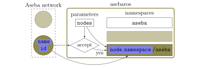
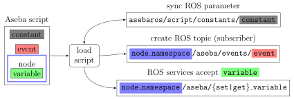
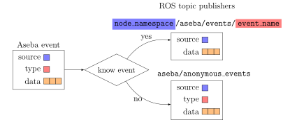
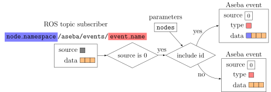
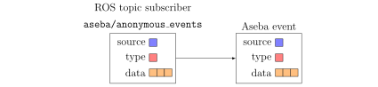

ROS-Aseba: how it works
The Aseba-ROS bridge provides run-time integration of an Aseba network into ROS.
As illustrated below, the asebaros ROS node communicates with the Aseba network.
The other ROS nodes interact indirectly with the Aseba network through the topics and the services exposed by asebaros.
The Aseba-ROS bridge
The bridge offers functionalities to
discover Aseba nodes connected to an Aseba network
expose information about Aseba nodes to ROS
load Aseba scripts from ROS
provide read/write access to the Aseba nodes’ variables from ROS
send/receive global Aseba events from ROS
Connection to the Aseba network
When launched, asebaros tries to connect to an Aseba network at the Dashel targets listed in the parameter targets,
looping through them until the first successful connection.
asebaros behaves also as an Aseba switch by:
During initialization, asebaros create services and topics only in the ROS namespace aseba.
Discovery of Aseba nodes
After connecting to the Aseba network, asebaros regularly (each second) queries the network for connected node.
When it discovers a new Aseba node with id and name, asebaros checks if it should connect the Aseba node to ROS.
Scanning the configuration stored in parameter nodes, it first tries to match both id and name,
then only name, and, if none is found, it uses the generic configuration.
For the selected configuration, nodes are accepted if accept is true and if there are not already max_number nodes with the same name.
For example, a parameter
nodes:
others:
accept: false
thymio:
name: thymio-II
accept: true
maximal_number: 1
makes asebaros accept only the first connected node with name="thymio-II".
A parameter
nodes:
others:
accept: false
thymio:
name: thymio-II
id: 1928
accept: true
makes asebaros accept only the node with name="thymio-II" and id=1928.
Finally, a parameter
nodes:
others:
accept: true
thymio:
name: thymio-II
accept: false
makes asebaros accept all but the node with name="thymio-II".
Accepted Aseba nodes are assigned to a namespace:
{namespace}/asebaif the configurationnamespaceis not empty, or else
{prefix}{id}/aseba
For example, the parameter
nodes: others: accept: false thymio: name: thymio-II accept: true prefix: thymio_ my-thymio: name: thymio-II accept: true id: 1928 prefix: my_thymio
makes asebaros use the namespace thymio_1234 for a Thymio with id 1234
or my_thymio for one with id 1928.
This way, one asebaros node can manage multiple Aseba nodes of the same Aseba network,
separating the related ROS topics and services in well-defined namespaces.

Discovery
Introspection
asebaros exposes the list of nodes (and their state) in three ways:
regularly publishing diagnostics messages, which can be visualizited for example with rqt,
publishing NodeList messages on topic
aseba/nodeseach time there is a change,serving [on-demand] GetNodeList queries on
aseba/get_nodes
For each connected Aseba node, a Services message is published on
<node_namespace>/aseba/description each time there is a change in the node.
It contains the global events and constants defined in the script running on the node, and the list of all variables.
The same information is served on demand as GetDescription queries on <node_namespace>/aseba/get_description.
Variables
For each connected Aseba node, the services <node_namespace>/aseba/{get|set}_variable of type GetVariable | SetVariable
allow to get | set variables. All variables are accessible: the internal ones and the ones defined in the Aseba script running on the node.
Variables values are integer arrays of constant length. A scalar value corresponds to an array of one element.
Scripts
asebaros tries to load an Aseba script to a node when
it connects and accepts the node, if the parameter script is set.
it receive a query of type LoadScript on service
aseba/load_script.
In the first case, the same script is loaded to all nodes; the user can set at launch time the value of the Aseba script constants using
the constants field of the parameter script.
In the second case, the request may specify the set of targeted nodes and the value of the constants.
When parsing an Aseba script file, we need to identify which code to load to which Aseba node.
Similarly to Aseba Studio, we match the identifiers (name, id) of the Aseba node with the code.
In order of preference, we try to select a code tagged with
the same name and id
the same name and
id==0the first code with the same name
Once a script is successfully compiled and loaded to an Asaba node, the node description will
contain the new set of events, constants, and variables.
At the same time, asebaros subscribes to the topics <node_namespace>/aseba/event/<event_name>
for each global event in the script and sync the value of the parameters script/constants
with the value of the scripts’ constants.

Loading an Aseba script
Events
The preferable way to exchange data between ROS and Aseba nodes is through Aseba global events. Contrary to getting/setting variables, this conforms to the event-driver approach that is most common both in Aseba and in ROS. Events can be used to control/trigger behaviors on the Aseba node and to asynchronously stream sensing readings to ROS.
Two kind of topics are linked with Aseba events:
AnonymousEvent messages on
aseba/anonymous_eventsfor events for whichasebaroscannot find either the source node or the event. The type of the event is contained in the messagge.Event messages on
<node_namespace>/aseba/events/<event_name>`for events with a well defined name and source node. The type and the source of the event are mapped to a topic.
When aseba receives a new Aseba event, it tries to match it to a known event for a node,
and then forward it as ROS message.

Forwarding Aseba events to ROS
In many scenarios, when events are used as commands and different Aseba nodes run the same Aseba script,
it is useful to distinguish command send to different robots/nodes.
To this aim, if the parameter include_id_in_events in nodes is set to true,
we include the id of the target node in the event payload.
Robots can then ignore all but the commands send to them, like in this example
onevent ping
if (event.args[0] == _id) then
emit pong
end
When it receives a Event message, asebaros forwards it only if the source is set to 0.

Forwarding ROS messages to Aseba
When it receives a AnonymousEvent message, it forwards it to Aseba as it is.

Forwarding anonymous ROS messages to Aseba